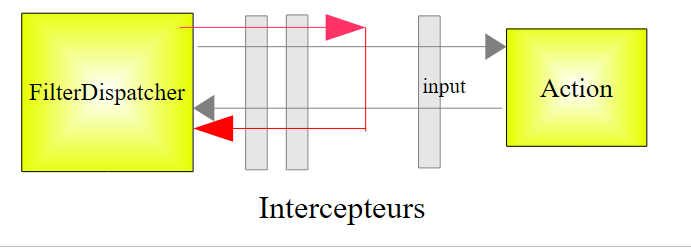
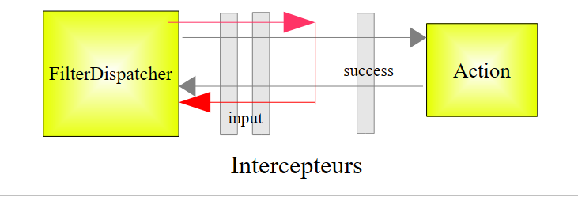
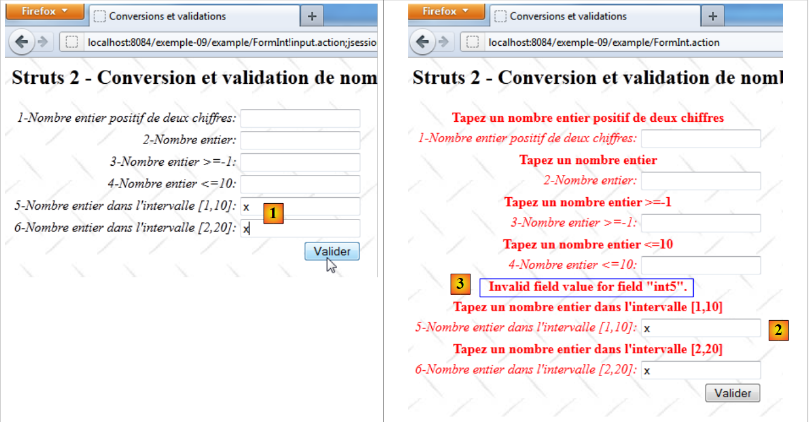

11. Example 09 - Conversion and validation of integers
We will now look at a series of examples on the conversion and validation of form parameters. The problem is as follows. To process a Url of the form [http://machine:port/.../Action], the [FilterDispatcher] controller instantiates the class that implements the requested action and executes one of its methods, by default the method called execute. The call to this execute method passes through a series of interceptors:
 |
The list of interceptors is defined in the file [struts-default.xml] at the root of the archive [struts2-core.jar]. The list of interceptors defined there is as follows:
<interceptor-stack name="defaultStack">
<interceptor-ref name="exception"/>
<interceptor-ref name="alias"/>
<interceptor-ref name="servletConfig"/>
<interceptor-ref name="i18n"/>
<interceptor-ref name="prepare"/>
<interceptor-ref name="chain"/>
<interceptor-ref name="debugging"/>
<interceptor-ref name="scopedModelDriven"/>
<interceptor-ref name="modelDriven"/>
<interceptor-ref name="fileUpload"/>
<interceptor-ref name="checkbox"/>
<interceptor-ref name="multiselect"/>
<interceptor-ref name="staticParams"/>
<interceptor-ref name="actionMappingParams"/>
<interceptor-ref name="params">
<param name="excludeParams">dojo\..*,^struts\..*</param>
</interceptor-ref>
<interceptor-ref name="conversionError"/>
<interceptor-ref name="validation">
<param name="excludeMethods">input,back,cancel,browse</param>
</interceptor-ref>
<interceptor-ref name="workflow">
<param name="excludeMethods">input,back,cancel,browse</param>
</interceptor-ref>
</interceptor-stack>
Among the interceptors, there is one that is responsible for injecting the valeuri values of the parami parameters accompanying the request into the action in the form parami=valeuri. We know that valeuri will be injected into the parami field of the action via the *setParami* method if it exists. Otherwise, no injection occurs and no error is reported.
The string parami=valeuri is a character string. Until now, the injection of valeuri has been performed into parami fields of type String:
Injecting the string valeuri as the value of the parami string posed no problem. If parami is not of type String, then valeuri must be converted to parami’s Ti type. This is the conversion issue. For example, we might want an age to be an integer and write in the action:
Furthermore, you might want to restrict the age range to between 1 and 150. This presents a validation issue. The parami parameter can be converted to the correct type without necessarily being valid. There are therefore two steps to go through. Returning to the diagram of how a request is processed:
 |
Two interceptors will handle the conversion and validation of the parameters, respectively. If either step fails, the request does not proceed to the action (red path above). The form from which the incorrect parameters were submitted is redisplayed with error messages.
The interceptors involved in parameter conversion and validation are the conversionError and validation interceptors on lines 19 and 20 of the interceptor list shown earlier. Note in lines 20–22 that the validation interceptor is not applied if the called method is one of the *<span style="color: #000000">input</span>*, back</span>*<span style="color: #000000">, cancel, or browse *methods. We will use this property later.
We begin by studying the conversion and validation of integers. We will spend some time on this first example because the validation involves many elements. Once these are understood, we will move more quickly through the examples that follow.
11.1. The form
 |
- in [1], the input form
- in [2], the result when validating without entering any values
11.2. The project Netbeans
The project Netbeans is as follows:
 |
- in [1], the three views of the application
- in [2], the source code, the internationalized message files, and the Struts configuration files.
11.3. Struts Configuration
The application is configured by the files [struts.xml] and [example.xml].
The file [struts.xml] is as follows:
<?xml version="1.0" encoding="UTF-8" ?>
<!DOCTYPE struts PUBLIC
"-//Apache Software Foundation//DTD Struts Configuration 2.0//EN"
"http://struts.apache.org/dtds/struts-2.0.dtd">
<struts>
<constant name="struts.custom.i18n.resources" value="messages" />
<include file="example/example.xml"/>
<package name="default" namespace="/" extends="struts-default">
<default-action-ref name="index" />
<action name="index">
<result type="redirectAction">
<param name="actionName">Accueil</param>
<param name="namespace">/example</param>
</result>
</action>
</package>
</struts>
Lines 12–18 define the action [/example/Accueil] as the default action when the user does not specify one.
The file [example.xml] is as follows:
<?xml version="1.0" encoding="UTF-8" ?>
<!DOCTYPE struts PUBLIC
"-//Apache Software Foundation//DTD Struts Configuration 2.0//EN"
"http://struts.apache.org/dtds/struts-2.0.dtd">
<struts>
<package name="example" namespace="/example" extends="struts-default">
<action name="Accueil">
<result name="success">/example/Accueil.jsp</result>
</action>
<action name="FormInt" class="example.FormInt">
<result name="input">/example/FormInt.jsp</result>
<result name="cancel" type="redirect">/example/Accueil.jsp</result>
<result name="success">/example/ConfirmationFormInt.jsp</result>
</action>
</package>
</struts>
- lines 8-10: the action [Accueil] displays the view [Accueil.jsp]
- line 11: the action [FormInt] executes the execute method of the [example.FormInt] class by default. We will see that two other methods will be executed: the input and cancel methods. These methods will then be specified in the request parameters.
- Line 12: The input key will display the [FormInt.jsp] view (line 5). This view is the form view.
- Line 13: The cancel key will be returned by a cancel method associated with the [Annuler] link. The view rendered will then be the [Accueil.jsp] view after a redirect (type=redirect).
- Line 14: The "success" key is returned by the "execute" method of the [FormInt] action. If the request reaches the "execute" method, it means it has successfully passed through all the interceptors, particularly those that verify the validity of the parameters. The execute method then simply returns the success key, which will display the confirmation view [ConfirmationInt.jsp].
11.4. Message files
The file [messages.properties] is as follows:
Accueil.titre=Accueil
Accueil.message=Struts 2 - Conversions et validations
Accueil.FormInt=Saisie de nombres entiers
Form.titre=Conversions et validations
FormInt.message=Struts 2 - Conversion et validation de nombres entiers
Form.submitText=Valider
Form.cancelText=Annuler
Form.clearModel=Raz mod\u00e8le
Confirmation.titre=Confirmation
Confirmation.message=Confirmation des valeurs saisies
Confirmation.champ=champ
Confirmation.valeur=valeur
Confirmation.lien=Formulaire de test
In addition to this file, the views use the following [FormInt.properties] file:
int1.prompt=1-Nombre entier positif de deux chiffres
int1.error=Tapez un nombre entier positif de deux chiffres
int2.prompt=2-Nombre entier
int2.error=Tapez un nombre entier
int3.prompt=3-Nombre entier >=-1
int3.error=Tapez un nombre entier >=-1
int4.prompt=4-Nombre entier <=10
int4.error=Tapez un nombre entier <=10
int5.prompt=5-Nombre entier dans l''intervalle [1,10]
int5.error=Tapez un nombre entier dans l''intervalle [1,10]
int6.prompt=6-Nombre entier dans l''intervalle [2,20]
int6.error=Tapez un nombre entier dans l''intervalle [2,20]
The file [FormInt.properties] is only used when the action that generated the view is action [FormInt]. This is a way to split the message file if it is too large. We internationalize the messages for the Action in the file [Action.properties].
11.5. Views and Actions
We will now present the views and actions of the application. Based on the application configuration:
<?xml version="1.0" encoding="UTF-8" ?>
<!DOCTYPE struts PUBLIC
"-//Apache Software Foundation//DTD Struts Configuration 2.0//EN"
"http://struts.apache.org/dtds/struts-2.0.dtd">
<struts>
<package name="example" namespace="/example" extends="struts-default">
<action name="Accueil">
<result name="success">/example/Accueil.jsp</result>
</action>
<action name="FormInt" class="example.FormInt">
<result name="input">/example/FormInt.jsp</result>
<result name="cancel" type="redirect">/example/Accueil.jsp</result>
<result name="success">/example/ConfirmationFormInt.jsp</result>
</action>
</package>
</struts>
We can see that there are three views [Accueil.jsp, FormInt.jsp, ConfirmationFormInt.jsp] and two actions [Accueil, FormInt].
11.5.1. Accueil.jsp
The view [Accueil.jsp] is as follows:

Its code is as follows:
<%@ page contentType="text/html; charset=UTF-8" pageEncoding="UTF-8"%>
<%@ taglib prefix="s" uri="/struts-tags" %>
<html>
<head>
<title><s:text name="Accueil.titre"/></title>
<s:head/>
</head>
<body background="<s:url value="/ressources/standard.jpg"/>">
<h2><s:text name="Accueil.message"/></h2>
<ul>
<li>
<s:url id="url" action="FormInt!input"/>
<s:a href="%{url}"><s:text name="Accueil.FormInt"/></s:a>
</li>
</ul>
</body>
</html>
The link on line 14 generates the following Html code:
<a href="<a href="view-source:http://localhost:8084/exemple-09/example/FormInt.action">/exemple-09/example/FormInt!input.action</a>">Saisie de nombres entiers</a>
This is therefore a link to the [FormInt] action configured as follows in [example.xml]:
<action name="FormInt" class="example.FormInt">
<result name="input">/example/FormInt.jsp</result>
<result name="cancel" type="redirect">/example/Accueil.jsp</result>
<result name="success">/example/ConfirmationFormInt.jsp</result>
</action>
Clicking the link will instantiate the [example.FormInt] class and execute its input method. Since it does not exist, the input method of the parent class ActionSupport will be executed. This method does nothing except return the input key. Therefore, the view [/example/FormInt.jsp] will be displayed.
Furthermore, the input method is one of the methods ignored by the validation interceptor:
<interceptor-ref name="validation">
<param name="excludeMethods">input,back,cancel,browse</param>
</interceptor-ref>
Therefore, there will be no parameter validation. This is important because there are no parameters here, and we will see later that the validation rules will require the existence of six parameters.
11.5.2. The [FormInt] action
Action [FormInt] is associated with the following class: [FormInt]
package example;
import com.opensymphony.xwork2.ActionSupport;
import com.opensymphony.xwork2.ModelDriven;
import java.util.Map;
import org.apache.struts2.interceptor.SessionAware;
import org.apache.struts2.interceptor.validation.SkipValidation;
public class FormInt extends ActionSupport implements ModelDriven, SessionAware {
// constructor without parameters
public FormInt() {
}
// action model
public Object getModel() {
if (session.get("model") == null) {
session.put("model", new FormIntModel());
}
return session.get("model");
}
public String cancel() {
// cleaning the model
((FormIntModel) getModel()).clearModel();
// result
return "cancel";
}
@SkipValidation
public String clearModel() {
// close to the model
((FormIntModel) getModel()).clearModel();
// result
return INPUT;
}
// SessionAware
private Map<String, Object> session;
public void setSession(Map<String, Object> session) {
this.session = session;
}
// validation
@Override
public void validate() {
// valid int6 input?
if (getFieldErrors().get("int6") == null) {
int int6 = Integer.parseInt(((FormIntModel) getModel()).getInt6());
if (int6 < 2 || int6 > 20) {
addFieldError("int6", getText("int6.error"));
}
}
}
}
We will comment on this code as needed. For now:
- line 9, the class [FormInt] implements two interfaces:
- ModelDriven, which has only one method, getModel on line 16
- SessionAware, which has only one method, setSession on line 41
- Lines 16–21: Implementation of the ModelDriven interface. Recall that this interface allows the view model to be moved to an external class, in this case the following [FormIntModel] class:
package example;
public class FormIntModel {
// constructor without parameters
public FormIntModel() {
}
// form fields
private String int1;
private Integer int2;
private Integer int3;
private Integer int4;
private Integer int5;
private String int6;
// raz model
public void clearModel(){
int1=null;
int2=null;
int3=null;
int4=null;
int5=null;
int6=null;
}
// getters and setters
...
}
The [FormIntModel] model has six fields corresponding to the six input fields in the [FormInt.jsp] view. These six fields will receive the posted values. Four of them are of type Integer. Therefore, the issue of converting String to Integer will arise for them. The clearModel method allows you to reset the model.
Let’s return to the getModel method of the [FormInt] action:
// action model
public Object getModel() {
if (session.get("model") == null) {
session.put("model", new FormIntModel());
}
return session.get("model");
}
- lines 3–5: The model is looked up in the session. If it is not there, an instance of the model is created and placed in the session.
- Line 6: While an instance of the action is created with each new request made to the action, its model remains in the session.
We see that the class does not define an input method, but the parent class has one that returns the input key. Executing this method displays the view [FormInt.jsp], which we present below.
11.5.3. The [FormInt.jsp] view
The view [FormInt.jsp] is as follows:
 |
- in [1], the blank form
- in [2], the form after validation of incorrect parameters.
Its code is as follows:
<%@ page contentType="text/html; charset=UTF-8" pageEncoding="UTF-8"%>
<%@ taglib prefix="s" uri="/struts-tags" %>
<html>
<head>
<title><s:text name="Form.titre"/></title>
<s:head/>
</head>
<body background="<s:url value="/ressources/standard.jpg"/>">
<h2><s:text name="FormInt.message"/></h2>
<s:form name="formulaire" action="FormInt">
<s:textfield name="int1" key="int1.prompt"/>
<s:textfield name="int2" key="int2.prompt"/>
<s:textfield name="int3" key="int3.prompt"/>
<s:textfield name="int4" key="int4.prompt"/>
<s:textfield name="int5" key="int5.prompt"/>
<s:textfield name="int6" key="int6.prompt"/>
<s:submit key="Form.submitText" method="execute"/>
</s:form>
<br/>
<s:url id="url" action="FormInt" method="cancel"/>
<s:a href="%{url}"><s:text name="Form.cancelText"/></s:a>
<br/>
<s:url id="url" action="FormInt" method="clearModel"/>
<s:a href="%{url}"><s:text name="Form.clearModel"/></s:a>
</body>
</html>
- lines 12-17: the six input fields corresponding to the six fields in the [FormIntModel] model of the [FormInt] action. When the view is displayed, the value attributes of the input fields are used for the value displayed by these fields. If the value attribute is missing, then the name attribute is used.
- Line 12: The input field is associated (name) with the int1 field of the action or its model if the action implements the ModelDriven interface. This is the case here. This also applies to all other fields.
- Line 18: The [Valider] button posts the entries to the [FormInt] action defined on line 11. Its execute method will be executed.
- Lines 21–22: The link [Annuler] executes the method [FormInt.cancel].
- Lines 24–25: The link [Raz modèle] executes the method [FormInt.clearModel].
11.5.4. The [ConfirmationFormInt.jsp] view
 |
It is displayed when all entries in the [FormInt.jsp] form are valid.
- In [1], valid values are posted
- In [2], the confirmation page
The code for the [ConfirmationInt.jsp] view is as follows:
<%@ page contentType="text/html; charset=UTF-8" pageEncoding="UTF-8"%>
<%@ taglib prefix="s" uri="/struts-tags" %>
<html>
<head>
<title><s:text name="Confirmation.titre"/></title>
<s:head/>
</head>
<body background="<s:url value="/ressources/standard.jpg"/>">
<h2><s:text name="Confirmation.message"/></h2>
<table border="1">
<tr>
<th><s:text name="Confirmation.champ"/></th>
<th><s:text name="Confirmation.valeur"/></th>
</tr>
<tr>
<td><s:text name="int1.prompt"/></td>
<td><s:property value="int1"/></td>
</tr>
<tr>
<td><s:text name="int2.prompt"/></td>
<td><s:property value="int2"/></td>
</tr>
<tr>
<td><s:text name="int3.prompt"/></td>
<td><s:property value="int3"/></td>
</tr>
<tr>
<td><s:text name="int4.prompt"/></td>
<td><s:property value="int4"/></td>
</tr>
<tr>
<td><s:text name="int5.prompt"/></td>
<td><s:property value="int5"/></td>
</tr>
<tr>
<td><s:text name="int6.prompt"/></td>
<td><s:property value="int6"/></td>
</tr>
</table>
<br/>
<s:url id="url" action="FormInt" method="input"/>
<s:a href="%{url}"><s:text name="Confirmation.lien"/></s:a>
</body>
</html>
To understand this code, keep in mind that the view is displayed after the [FormInt] class is instantiated. The fields of this class and its model [FormIntModel] are therefore accessible to the view.
- lines 16–38: the values of the six fields are displayed
- lines 42-43: a link to the [FormInt] action. The code generated for this link is as follows:
<a href="/exemple-09/example/FormInt!input.action">Formulaire de test</a>
The specific Url in the link indicates that the input method of the [FormInt] action must process the request. Recall the configuration of the [FormInt] action in [example.xml]:
<action name="FormInt" class="example.FormInt">
<result name="input">/example/FormInt.jsp</result>
<result name="cancel" type="redirect">/example/Accueil.jsp</result>
<result name="success">/example/ConfirmationFormInt.jsp</result>
</action>
The input method of the [FormInt] class will be that of its parent class, ActionSupport. The input method of the [FormInt] class is executed after the interceptors have been executed
 |
We know that the call to the input method is ignored by the validation interceptor. Therefore, there will be no validation.
The view [FormInt.jsp] is displayed:
 |
In [2], the input fields revert to their original values. This may seem normal, but it is not. Since the [FormInt] action was called, the associated class [FormInt] was instantiated. Because this class implements the ModelDriven interface, its getModel method was called:
// action model
public Object getModel() {
if (session.get("model") == null) {
session.put("model", new FormIntModel());
}
return session.get("model");
}
We can see that the action model is retrieved from the session. In the previous step, this model was updated with the posted values. We therefore retrieve these values. If we hadn't placed the model in the session, we would have had six empty fields in the [FormInt.jsp] view.
11.5.5. The [FormInt!clearModel] action
The action [Formint!clearModel] is triggered by clicking the link [Raz modèle]:
 |
- in [1], the form after an incorrect entry
- in [2], the form after clicking the [Raz modèle] link.
The method [FormInt.clearModel] is as follows:
@SkipValidation
public String clearModel() {
// close to the model
((FormIntModel) getModel()).clearModel();
// result
return INPUT;
}
- line 1: there is no validation to perform. We use the notation @SkipValidation to indicate this. The validation interceptor will therefore not perform any validations.
- line 4: the method [FormIntModel].clearModel is executed. We have already encountered it. It resets the six fields of the model to null.
- Line 7: The method returns the input key.
Returning to the configuration of the [FormInt] action:
<action name="FormInt" class="example.FormInt">
<result name="input">/example/FormInt.jsp</result>
<result name="cancel" type="redirect">/example/Accueil.jsp</result>
<result name="success">/example/ConfirmationFormInt.jsp</result>
</action>
We can see that the "input" key will display the view [FormInt.jsp]. This view displays the six fields of the model. Since these fields are null, the view displays six empty fields [2].
11.5.6. The [FormInt!cancel] action
The action [Formint!cancel] is triggered by clicking the link [Annuler]:
 |
- in [1], the form after an incorrect entry
- in [2], the home page after clicking the [Annuler] link.
The [FormInt.cancel] method is as follows:
public String cancel() {
// cleaning the model
((FormIntModel) getModel()).clearModel();
// result
return "cancel";
}
- Line 1: Note that the method is not preceded by the annotation SkipValidation. However, we do not want to perform validation. The cancel method is one of the four methods (input, back, cancel, browse) ignored by the validation interceptor, so the annotation SkipValidation is not required.
- Line 3: It clears the model
- Line 5: It sets the cancel key
Returning to the configuration of the [FormInt] action:
<action name="FormInt" class="example.FormInt">
<result name="input">/example/FormInt.jsp</result>
<result name="cancel" type="redirect">/example/Accueil.jsp</result>
<result name="success">/example/ConfirmationFormInt.jsp</result>
</action>
We can see that the "cancel" key will display the view [Accueil.jsp] after a client-side redirect. This is what the view [2] shows.
11.6. The validation process
We will now discuss the validation of the six input fields associated with the following six fields in the model:
// form fields
private String int1;
private Integer int2;
private Integer int3;
private Integer int4;
private Integer int5;
private String int6;
This validation occurs every time the [FormInt] class is instantiated and the executed method is not ignored by the validation interceptor. It is controlled by:
- the file [FormInt-validation.xml], if it exists in the same folder as the class [FormInt]
- the [FormInt.validate] method, if it exists
 |
- in [1]: the [xwork-validator-1.0.2.dtd] file required for the validation process
- to [2]: the file [FormInt-validation.xml] in the same folder as the class [FormInt]
The [FormInt-validation.xml] file is as follows:
<!--
<!DOCTYPE validators PUBLIC "-//OpenSymphony Group//XWork Validator 1.0.2//
EN" "http://www.opensymphony.com/xwork/xwork-validator-1.0.2.dtd">
-->
<!DOCTYPE validators PUBLIC "-//OpenSymphony Group//XWork Validator 1.0.2//
EN" "http://localhost:8084/exemple-09/example/xwork-validator-1.0.2.dtd">
<validators>
<field name="int1" >
<field-validator type="requiredstring" short-circuit="true">
<message key="int1.error"/>
</field-validator>
<field-validator type="regex" short-circuit="true">
<param name="expression">^\d{2}$</param>
<param name="trim">true</param>
<message key="int1.error"/>
</field-validator>
</field>
<field name="int2" >
...
</field>
...
</validators>
- in [3], the Url of the DTD (Document Type Definition) of the validation file. This must be accessible; otherwise, the validation file is not used.
- in [7], the Url of the DTD used by the application. We have placed the DTD file in the [example] folder of the example-09 [1] project so that it is available even if there is no Internet access.
- Lines 11–20: Set the validation conditions for the int1 parameter associated with the int1 field in the model.
The tag named int1 in the form is as follows:
<s:textfield name="int1" key="int1.prompt" />
The int1 field in the model is declared as follows:
private String int1;
- Lines 12–14: Check that the int1 parameter exists (is not null) and has a non-zero length. If this is not the case, an error message is associated with the input field. It is defined in [FormInt.properties] as follows:
int1.error=Tapez un nombre entier positif de deux chiffres
If there is an error, the validation process for the int1 parameter stops (short-circuit=true).
- Lines 15–19: The validity of the int1 parameter is checked using a regular expression.
- Line 16: The regular expression, in this case two digits with nothing before or after.
- line 17: Before being compared to the regular expression, the int1 parameter will have its leading and trailing spaces removed.
- Line 18: The error message, if any. It is the same as for the previous validator.
Let’s see what happens:
 |
- in [1], an incorrect entry for the int1 field
- In [2], the returned page:
- The error message for key int1.error is present. It is in red.
- The label of the incorrect field is also in red.
- The incorrect entry is displayed again. This must be anticipated because it is not necessarily the default behavior.
We have seen that form validation triggers the execution of the [FormInt].execute method if the request manages to pass through all the interceptors, particularly the validation interceptor:
 |
- If the request reaches the action’s execute method, it returns the success key to the controller, as we have seen.
- If the validation interceptor stops the request because the tested parameters are invalid, then the `input` key is returned to the controller.
Since the [FormInt] action is configured as follows:
<action name="FormInt" class="example.FormInt">
<result name="input">/example/FormInt.jsp</result>
<result name="cancel" type="redirect">/example/Accueil.jsp</result>
<result name="success">/example/ConfirmationFormInt.jsp</result>
</action>
When there is a validation error, the view [FormInt.jsp] is displayed, i.e., the form. Struts tags are designed to display any error messages associated with them. We will therefore see the [FormInt.jsp] view with error messages attached to the various fields. This is what the [2] view shows.
Let’s now examine the validation of the int2 field, declared as follows in the model:
private Integer int2;
The validation of the int2 field in [FormInt-validation.xml] is as follows:
<field name="int2" >
<field-validator type="required" short-circuit="true">
<message key="int2.error"/>
</field-validator>
<field-validator type="conversion" short-circuit="true">
<message key="int2.error"/>
</field-validator>
</field>
- Lines 2–4: verify that the int2 parameter exists.
- lines 5-7: verify that the conversion String --> Integer is possible
- lines 3, 6: the error message for key int2.error is as follows:
int2.error=Tapez un nombre entier
The validation for the Integer field int3 in the model in [FormInt-validation.xml] is as follows:
<field name="int3" >
<field-validator type="required" short-circuit="true">
<message key="int3.error"/>
</field-validator>
<field-validator type="conversion" short-circuit="true">
<message key="int2.error"/>
</field-validator>
<field-validator type="int" short-circuit="true">
<param name="min">-1</param>
<message key="int3.error"/>
</field-validator>
</field>
- lines 8-11: verify that the int3 field is of type integer >=-1
- lines 3, 7: the error message for key int3.error is as follows:
int3.error=Tapez un nombre entier >=-1
The validation for the Integer field int4 in the model in [FormInt-validation.xml] is as follows:
<field name="int4" >
<field-validator type="required" short-circuit="true">
<message key="int4.error"/>
</field-validator>
<field-validator type="conversion" short-circuit="true">
<message key="int2.error"/>
</field-validator>
<field-validator type="int" short-circuit="true">
<param name="max">10</param>
<message key="int4.error"/>
</field-validator>
</field>
- lines 8-11: verify that it is an integer <=10
- lines 3, 7: the error message for key int4.error is as follows:
int4.error=Tapez un nombre entier <=10
The validation for the Integer field int5 in the model in [FormInt-validation.xml] is as follows:
<field name="int5" >
<field-validator type="required" short-circuit="true">
<message key="int5.error"/>
</field-validator>
<field-validator type="conversion" short-circuit="true">
<message key="int2.error"/>
</field-validator>
<field-validator type="int" short-circuit="true">
<param name="min">1</param>
<param name="max">10</param>
<message key="int5.error"/>
</field-validator>
</field>
- lines 5-9: verify that it is an integer in the range [1, 10].
- lines 3, 8: the error message for key int5.error is as follows:
int5.error=Tapez un nombre entier dans l''intervalle [1,10]
The validation for the String int6 field in the model in [FormInt-validation.xml] is as follows:
<field name="int6" >
<field-validator type="requiredstring" short-circuit="true">
<message key="int6.error"/>
</field-validator>
<field-validator type="regex" short-circuit="true">
<param name="expression">^\d{1,2}$</param>
<param name="trim">true</param>
<message key="int6.error"/>
</field-validator>
</field>
- lines 5-9: verify that int6 is a 2-digit string.
- Lines 3, 8: The error message for key int6.error is as follows:
int6.error=Tapez un nombre entier dans l''intervalle [2,20]
The previous validation does not check that the int6 parameter is an integer in the range [2,20]. This check is performed in the [FormInt].validate method, which is executed after the [FormInt-validation.xml] file has been processed. This method is as follows:
// validation
@Override
public void validate() {
// valid int6 input?
if (getFieldErrors().get("int6") == null) {
int int6 = Integer.parseInt(((FormIntModel) getModel()).getInt6());
if (int6 < 2 || int6 > 20) {
addFieldError("int6", getText("int6.error"));
}
}
}
- Line 5: Check if there are any errors associated with the int6 field. If so, stop here.
- line 6: if there were no errors, we retrieve the String int6 field from the model and convert it to an integer.
- line 7: we verify that the retrieved integer is within the range [2,20].
- Line 8: If this is not the case, an error message is attached to the int6 field. This error message is looked up in the message file using the key int6.error.
If errors are found at the end of this validation process, the call to the [FormInt].execute method is aborted and the input key is returned to the Struts controller.
 |
11.7. Final Details
We have seen several ways to enter integers. They are not all equivalent. Consider, for example, the int5 and int6 input fields:
In the [FormInt.jsp] view, they are declared as follows:
<s:textfield name="int5" key="int5.prompt"/>
<s:textfield name="int6" key="int6.prompt"/>
Their model is declared in [FormIntModel.java]:
private Integer int5;
private String int6;
The int5 field is of type Integer, while the int6 field is of type String. Their validation rules are different:
<field name="int5" >
<field-validator type="required" short-circuit="true">
<message key="int5.error"/>
</field-validator>
<field-validator type="conversion" short-circuit="true">
<message key="int2.error"/>
</field-validator>
<field-validator type="int" short-circuit="true">
<param name="min">1</param>
<param name="max">10</param>
<message key="int5.error"/>
</field-validator>
</field>
<field name="int6" >
<field-validator type="requiredstring" short-circuit="true">
<message key="int6.error"/>
</field-validator>
<field-validator type="regex" short-circuit="true">
<param name="expression">^\d{1,2}$</param>
<param name="trim">true</param>
<message key="int6.error"/>
</field-validator>
</field>
Validation of the int6 field is performed by the validate method of the [FormInt] action:
public void validate() {
// valid int6 input?
if (getFieldErrors().get("int6") == null) {
int int6 = Integer.parseInt(((FormIntModel) getModel()).getInt6());
if (int6 < 2 || int6 > 20) {
addFieldError("int6", getText("int6.error"));
}
}
Although expressed differently, both validation rules aim to verify that the entered field is an integer within a specified range. However, the behavior of the int5 and int6 fields differs at runtime, as shown in the following screenshots:
 |
- in [1], the same incorrect entry for both fields
- In [2], the error page is returned. The two fields have different error messages.
- In [3], an unwanted message appears for the int5 field because it is in English. It stems from the failed conversion String --> Integer. There is also an exception in the Apache logs:
Curiously enough, Struts looked for a method named FormIntModel.setInt5(String value) but couldn’t find it.
The key for the unwanted message is xwork.default.invalid.fieldvalue. To translate it into French, simply associate a French text with this key. We therefore add the following line to the [messages.properties] file:
...
xwork.default.invalid.fieldvalue=Valeur invalide pour le champ "{0}".
11.8. Conclusion
This concludes our study of this first application dedicated to parameter validation. It was complex to explain. We will now examine similar applications. Therefore, we will only comment on what has changed.